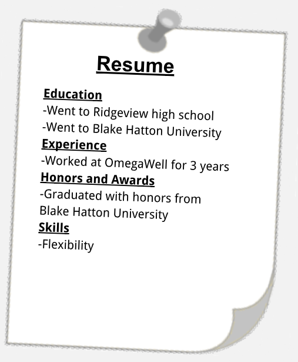

First read this paragraph then answer the question that follows.
To have an outstanding resume, you need to start by making sure you do not make simple mistakes. Things such as having an unprofessional email address makes 76% of resumes get discarded. Also, employers are three times as likely to reject resumes that use personal pronouns such as I, me or my. Your references should be people who have experience working with you and are able to attest to your work ethic. When listing your experiences, you need to make sure that they relate to the field of work of the job that you are applying for and that they are nothing too personal like babysitting our neighbors. For example, if you are writing a resume applying for a position in the field of engineering, you should not include that you once won an art competition because it has nothing to do with engineering. When writing a resume, you want to stay away from using personal pronouns such as I, me or my. You should start your sentences with verbs to make our resume seem professional. For example, you should say ”worked at OmegaWell for 3 years” instead of “I worked at OmegaWell for 3 years”. When writing your resume you should also make sure that you save it as a pdf file because they formatting may be off if you send it by other means. This is very important because employers spend an average of 6 seconds going through a single resume. To ensure that your resume has a professional look, you should use one of the three resume structures(Targeted, Functional, and Chronological). You should choose the structure dependent on the job you are applying for and the amount of experience that you have. Finally, when writing an essay you should know what and what not to put onto your resume. On your resume, you should have the general information (experience, education, awards ect.), but you should refrain from including personal information such as your home address, physical characteristics, or your personal photo. You should not list anything outside of this because it will make your resume seem off-topic.
Question 3.
Choose all of the following TRUE answers
Explanation:

(A) You should use personal pronouns(I,me,my)
(B) The formatting of your resume does not matter
(C) Employers review resumes for an average of 8 seconds
(D) You should list EVERY job you have held
(E) You should slightly exaggerate skills on your resume